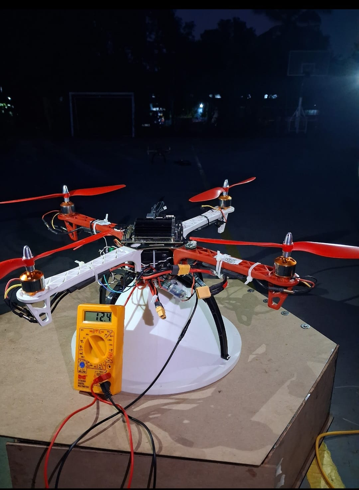

Autonomous Unmanned Aerial Vehicle (UAV)
A hands-on multi-rotor UAV development project covering two different airframe configurations — a hexacopter and a quadcopter — while treating both as part of the same UAV engineering work.
Project overview
The project focused on building and validating practical unmanned aerial platforms rather than treating the aircraft as a single off-the-shelf system. The work involved mechanical assembly, propulsion integration, power distribution, flight-controller installation, configuration, control tuning and flight testing.
The two aircraft configurations use different frame geometries and motor counts, but they belong to the same overall UAV project. The hexacopter configuration provides six motors, while the quadcopter configuration uses four motors. The different frames are therefore documented here as variants of one project instead of separate portfolio projects.
The development process was hardware-first: the aircraft had to be electrically and mechanically sound before software configuration and flight testing could be meaningful.
System architecture & technical focus
AIRFRAME & PROPULSION
Assembled multi-rotor frames, brushless motors, propellers and electronic speed controllers. Mechanical alignment, motor wiring and propulsion connections were checked before powered testing.
FLIGHT CONTROLLER
Integrated a Pixhawk flight controller as the central flight-control unit and worked with ArduPilot-based configuration and ground-control tooling.
POWER & ELECTRICAL INTEGRATION
Worked with battery power, power distribution, ESC connections and the wiring required to deliver reliable power to the propulsion and flight-control electronics.
CONTROL & TESTING
Performed staged testing: inspection, power-up checks, motor verification, controller configuration, control-response checks and practical flight testing.
Work performed
- Built and mechanically inspected the UAV frames before electrical integration.
- Integrated brushless motors, ESCs, propellers and the aircraft power-distribution system.
- Installed and connected the Pixhawk flight controller and supporting electronics.
- Configured the flight-control system and checked motor/propulsion response before flight.
- Performed pre-flight electrical and hardware checks to catch wiring and integration problems.
- Carried out practical flight tests and evaluated stability and control response.
- Worked with both six-motor and four-motor frame configurations while maintaining the same overall UAV development objective.
- Used the project to build practical experience across airframe construction, embedded flight hardware, control systems and field testing.
Technology stack
Project media


